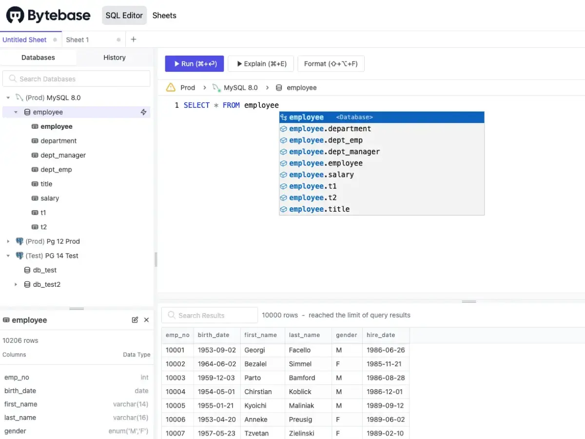
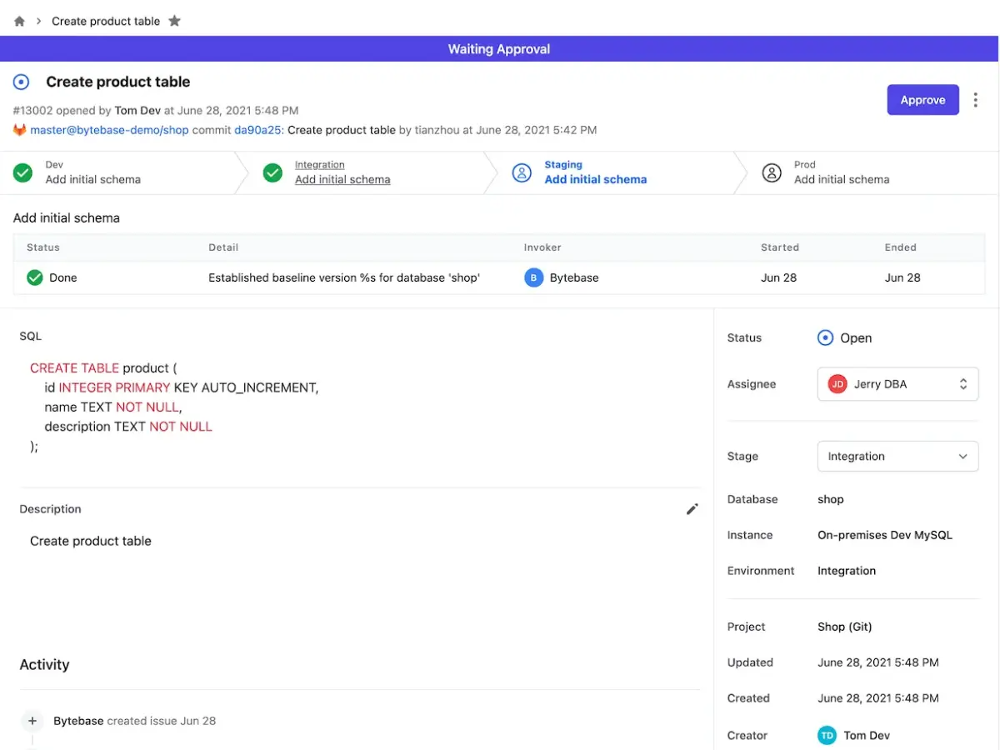
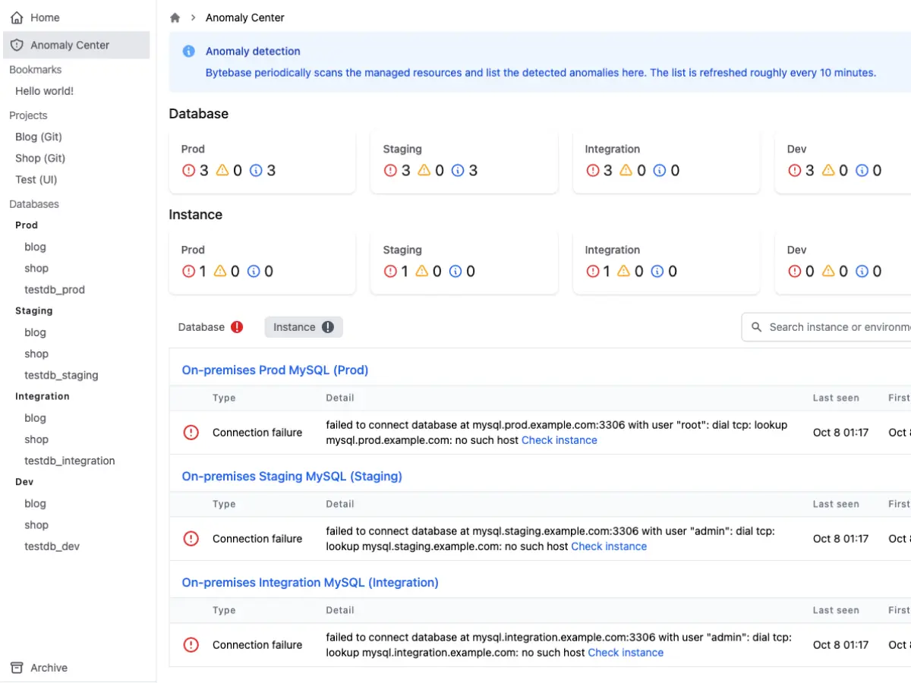

Bytebase
 项目首页
项目首页
Bytebase是面向DevOps团队的基于 Web 的、零配置、无依赖的数据库架构更改和版本控制管理工具。



 如何部署在线 Bytebase
如何部署在线 Bytebase
什么是 Bytebase
- Bytebase是一款开源的数据库管理工具，主要支持PostgreSQL和MySQL数据库。它提供直观的用户界面和强大的功能，如数据管理、追踪、备份和协作，帮助用户提升数据库管理效率
功能列表
- 数据库变更管理：通过标准化的操作流程支持在线模式迁移、批量变更等复杂操作
- SQL审查：内置100+条SQL审查规则，帮助团队检测SQL反模式，确保SQL风格的统一
- GitOps集成：与GitHu和GitLa无缝集成，支持通过GitOps工作流进行数据库变更
- 数据访问控制：提供组织级别的数据访问控制策略，确保数据安全
- 异常检测与审计：集中管理数据库异常行为和用户操作，提供全面的审计日志